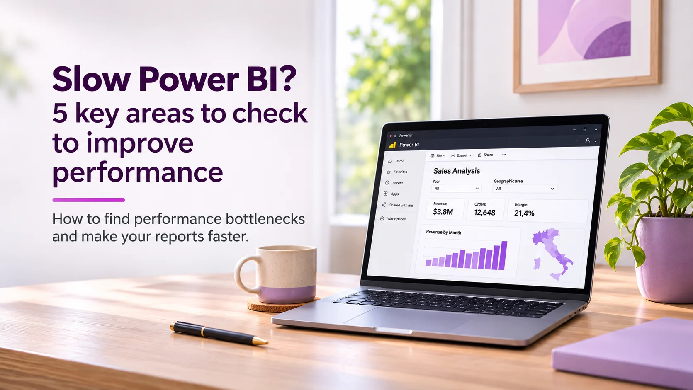
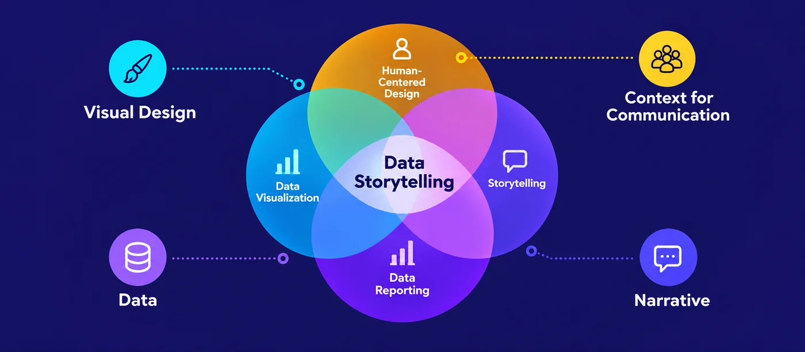
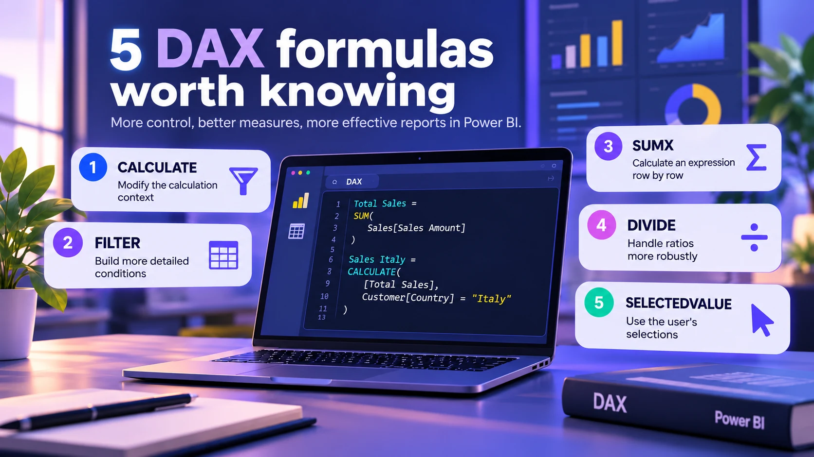
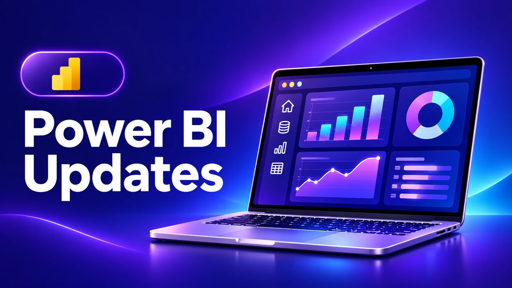

Slow Power BI report? 5 things to check to improve performance
Five areas to check when a Power BI report is slow: visuals, data modeling, DAX measures, connectivity, and available resources.
Read the articleARCHIVE
Insights, guides and updates on Power BI, DAX, data visualization, data storytelling and analytics.

Five areas to check when a Power BI report is slow: visuals, data modeling, DAX measures, connectivity, and available resources.
Read the article
How to build an effective visual narrative that helps people understand what is happening and why.
Read the article
Five DAX formulas and patterns that frequently appear in Power BI models, explained with practical examples.
Read the article
POWER BI NEWS & RELEASES Power BI Updates Explore Power BI updates, new features and monthly releases, explained clearly with practical insights. Explore all updates